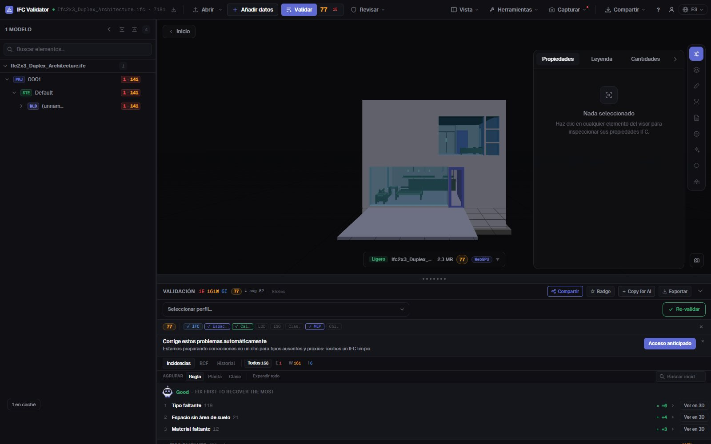
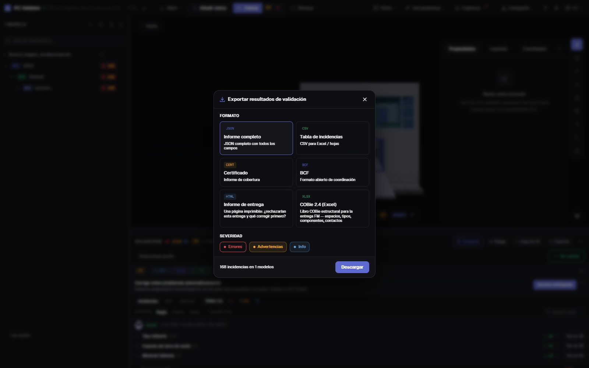

Health check del modelo IFC
nota e informe en 30 s
Arrastra un IFC y obtén su Health Score de 0 a 100 con 44 reglas de calidad (GUIDs, estructura espacial, tipos, materiales, conjuntos de propiedades, coordenadas), con los tres problemas que más puntos restan en primer lugar. Después exporta un informe de entrega imprimible, un certificado, BCF o COBie.
Revisar el modelo — gratis →Sin cuenta · Sin subir nada · Funciona en tu navegador · Gratis

Qué puedes hacer
Una revisión que puedes entregar
Una nota para el cliente, la lista completa para el autor y la evidencia para el CDE.
Health Score 0–100
Una nota de la calidad de datos del modelo, ponderada por gravedad, con la media del sector para comparar.
Qué corregir primero
Las reglas que más puntos restan, con los puntos que recuperarías, y un botón para ver sus elementos en 3D.
44 reglas + IDS
GUIDs, jerarquía espacial, huérfanos, tipos, materiales, Psets, unidades, coordenadas, colisiones, y cualquier IDS de buildingSMART.
Informe de entrega imprimible
Un informe HTML de una página (¿se rechazaría esta entrega y qué corregir?) que se imprime o se guarda en PDF desde el navegador.
Certificado, BCF, COBie
Un certificado de cobertura, incidencias BCF 2.1 para el autor, CSV/JSON y un libro COBie 2.4.
Sin subir nada
La revisión se ejecuta en tu navegador con WebAssembly. Úsala bajo NDA, sin conexión y en cualquier ordenador.
Capturas

Preguntas
Preguntas frecuentes
¿Qué es un health check de un modelo IFC?
Una revisión automática de la calidad de datos de un IFC: estructura, identificadores, clasificación, propiedades y coordenadas. IFC Viewer Online la resume en un Health Score de 0 a 100 y lista cada problema con el elemento afectado.
¿Puedo obtener el resultado como informe PDF?
Sí. Exporta el «Informe de entrega»: un informe HTML imprimible de una página con la nota, el recuento de problemas y qué corregir primero. Ábrelo e imprímelo o «Guardar como PDF» desde el navegador. También hay certificado JSON, CSV, BCF y COBie.
¿Tengo que subir el modelo IFC para revisarlo?
No. A diferencia de los revisores que exigen subir el archivo, aquí se abre y se comprueba en tu navegador; nunca se envía a un servidor.
¿Qué es una buena nota?
90–100 está listo para entregar, 75–89 vale para coordinación con correcciones menores, 50–74 necesita trabajo antes de entregar y por debajo de 50 hay problemas graves de datos.
¿Es gratis?
Sí, para cualquier uso, también proyectos comerciales, sin cuenta y sin límite de tamaño de pago.
Revisa el modelo antes de que lo haga tu cliente.
Health Score · Qué corregir primero · Informe imprimible · BCF · COBie
Revisar el modelo — gratis →